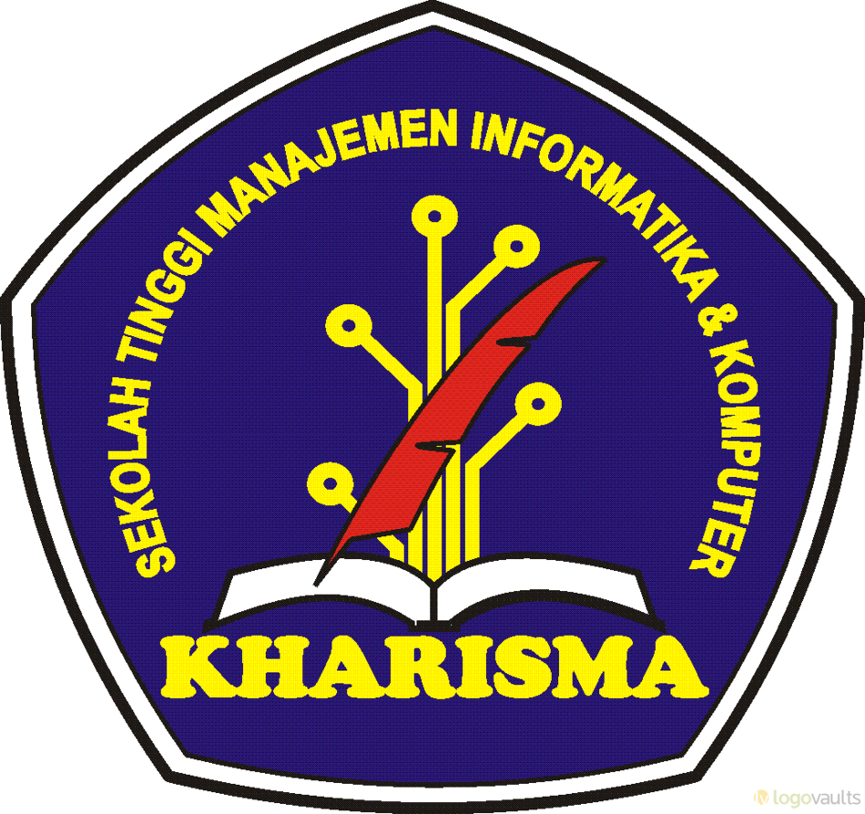

Sekolah Tinggi Manajemen Informatika dan Komputer (STMIK) Kharisma Makassar adalah perguruan tinggi bidang informatika dan komputer yang berdiri di Makassar pada 29 Maret 2000 yang ditandai dengan terbitnya Surat Keputusan Dirjen Pendidikan Tinggi Departemen Pendidikan Nasional nomor 33/D/O/2000 tanggal 29 Maret 2000. STMIK Kharisma Makassar hingga saat ini telah menghasilkan lebih dari 1000 alumni yang sebagian besar telah terserap sebagai tenaga kerja di berbagai bidang.
| Didirikan : 2000 |
| Ketua: Syaiful Rahman, S.Kom., M.Kom. |
| Lokasi:Jln.Baji Ateka NO.20,Makassar, Sulawesi Selatan, Indonesia |
| No.Telpon: (0411) 871555 |
| Afiliasi: Yayasan Pendidikan KHARISMA Makassar |